WiaB Lab - Application Management
<FeatureCard title="Application Management with IBM Cloud Pak for Multicloud Management” color="dark”

Lab Overview
IBM Cloud Pak for Multicloud Management provides consistent visibility, automation, and governance across a range of multicloud management capabilities such as cost and asset management, infrastructure management, application management, multi-cluster management, edge management, and integration with existing tools and processes. Customers can leverage Cloud Pak for Multicloud Management to simplify their IT and application ops management, while increasing flexibility and cost savings with intelligent data analysis driven by predictive signals.
Customers can leverage IBM Cloud Pak for Multicloud Management to simplify their IT and application ops management, while increasing flexibility and cost savings with intelligent data analysis driven by predictive signals.
In this tutorial, you will explore the following key capabilities:
Understand Cloud Pak for Multicloud ManagementDeploy an application using Channels and SubscriptionsMove the application between clusters using Placement PoliciesVisualize the application health using Grafana dashboards
Prerequisite
- You need to have your personal CP4MCM on ROKS environment (check here how to request it).
- You need to pre-install all necessaries CLI tools (check here how to install them).
- If you didn’t complete the Lab 1 - Multicluster Management, you need, at least, to complete the steps of Add Manged Clusters to have your clusters ready on CP4MCM to be able to follow this lab.
Business Context
As a member of the Cloud Operation team, you are having problems to manage your multicloud hybrid world. Operate your cloud-based services and data across multiple providers is overwhelming your team. Your company is deploying multiple Kubernetes clusters to address their specific needs. Some Dev teams are deploying clusters across public and private clouds, and some are deploying clusters across regions, and some are deploying clusters to support the development and test needs.
As different teams deploy more clusters, new challenges are introduced:
- Where are my services running?
- How can I monitor applications across clusters and clouds?
- How can I manage clusters as if they were one environment?
- How do I monitor usage across clouds?
- Where are the failed components?
- How do I deploy applications across these environments?
- How do I move workloads across environments?
- How do I set consistent security policies across environments?
- Which clusters are compliant?
- How can I place workloads based on capacity, policy?
Because of that, you want to explore how IBM Cloud Pak for Multicloud Management, provides consistent visibility, governance and automation of your complex environment.
IBM Cloud Pak for Multicloud Management provides enhanced application management capabilities through an improved application model and deployment options. The concept helps simplify and streamline application life cycle management across clusters.
In this tutorial, you will be using a sample Modresort application to demonstrate how to deploy an application in multiple clusters using channels and subscriptions. The Modresort is a WebSphere Liberty Java application available in Dockerhub.
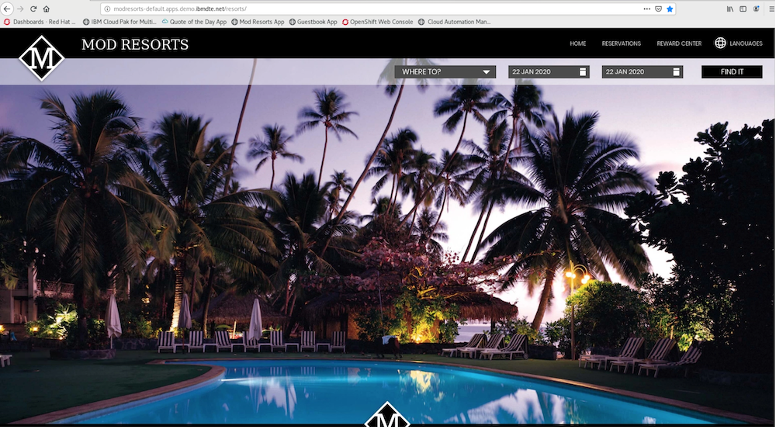
In this tutorial, you use two Red Hat OpenShift clusters.
- Hub-cluster is the Hub cluster that includes management console, federated monitoring, and all the controllers. In this Lab, you identify the hub-cluster with the label Dev for environment.
- Managed-cluster is an Openshift cluster managed by the Hub cluster. In this Lab, you identify the managed cluster with the label QA for environment
You will complete the following tasks:
Deploy Modresort application using Channels and SubscriptionsMove the application between clusters using Placement PoliciesVisualize application health by using Grafana dashboard
Define Application Channel
IBM Cloud Pak for Multicloud Management provides enhanced application management capabilities through an improved application model and new deployment options. The new model and deployment options are designed to unify and simplify the deployment experience for creating and managing your applications across clusters.
The new application management capabilities use Channels and Subscriptions to gain improved continuous and automated delivery of deployables to target managed clusters.
The concept is similar to subscription model of TV channels. In this model, all the applications, which are packaged as helm charts, will be hosted in one or more repositories. The repositories, which contain the application packages, are defined as channels that broadcast across the clusters. If you want to deploy an application, then define a subscription to the channel with the name of the application (one or more) you want to deploy
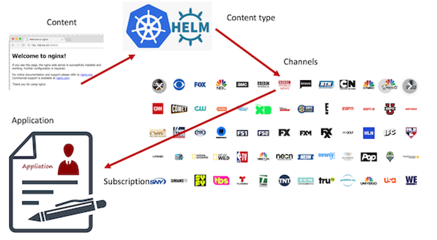
Channels (Channel.app.ibm.com) define a namespace within the hub cluster and point to a physical place where resources are stored for deployment; such as an object store, Kubernetes namespace, or Helm repository.

In this section, you define Application and Channel resources to deploy the Modresort application. The resources will be created using YAML files. The modresort application is a simple application with only one component.
1.Back to the terminal window, let’s create our YAML files to define Channel, Application, Subscription, etc. To simplify the lab steps, you will clone a pre-created YAML. Don’t worry, because we will understand them. To copy pre-created YAML files, let’s use the Git CLI (if you don’t have Git CLI, check here how to install it). Run the command below:
git clone https://github.ibm.com/demohub/appmgmtlab.git
cd appmgmtlab

2.Now you have two folders (modresortchan and modresortapp). Let’s start exploring the modresortchan and use any editor to see the content of the channel.yaml file.
cd modresortchan
vi channel.yaml
3.Our channel.yaml has the content below.
apiVersion: app.ibm.com/v1alpha1
kind: Channel
metadata:
name: modresort-devchan
namespace: modresort-entitlement
labels:
app: modresortchan
spec:
type: Namespace
pathname: modresort-entitlement
It is a really simple file. The spec collection defines the type of the channel. In this lab, the channel is of type namespace, meaning that the yaml you create will be deployed and stored in OpenShift namespaces rather than in a Helm chart or Object store. This file is ready, and you don’t need to edit it, go ahead and close the channel.yaml file.
4.The modresort application component consists of a deployment resource definition and a service resource definition.
To enable these components to be used by the channel subscription, each of the resources need to be wrapped by a new custom resource definition (CRD) called Deployable.
Use your editor again and check now the deployable.yaml file.
vi deployable.yaml
apiVersion: app.ibm.com/v1alpha1
kind: Deployable
metadata:
name: devchan-modresortchan-deployment
namespace: modresort-entitlement
annotations:
app.ibm.com/is-local-deployable: "false"
labels:
app: modresortchan
component: main
package: modresort
spec:
template:
kind: Deployment
apiVersion: apps/v1
metadata:
name: devchan-modresortchan-deployment
labels:
app: modresortchan
spec:
selector:
matchLabels:
app: modresortchan
release: modresort-devchan
tier: frontend
replicas: 1
template:
metadata:
labels:
app: modresortchan
release: modresort-devchan
tier: frontend
spec:
containers:
- name: frontend
image: "kpostreich/modresort:1.0"
imagePullPolicy: Always
ports:
- containerPort: 9080
env:
- name: GET_HOSTS_FROM
value: dns
- name: WLP_LOGGING_CONSOLE_FORMAT
value: json
- name: WLP_LOGGING_CONSOLE_LOGLEVEL
value: info
- name: WLP_LOGGING_CONSOLE_SOURCE
value: message,trace,accessLog,ffdc
---
apiVersion: app.ibm.com/v1alpha1
kind: Deployable
metadata:
name: devchan-modresortchan-service
namespace: modresort-entitlement
annotations:
app.ibm.com/is-local-deployable: "false"
labels:
app: modresortchan
component: main
package: modresort
spec:
template:
kind: Service
apiVersion: v1
metadata:
name: devchan-modresortchan-service
labels:
app: modresortchan
spec:
type: NodePort
ports:
- port: 9080
selector:
app: modresortchan
release: modresort-devchan
tier: frontend
---
apiVersion: app.ibm.com/v1alpha1
kind: Deployable
metadata:
name: devchan-modresortchan-route
namespace: modresort-entitlement
annotations:
app.ibm.com/is-local-deployable: "false"
labels:
app: modresortchan
component: main
package: modresort
spec:
template:
apiVersion: route.openshift.io/v1
kind: Route
metadata:
labels:
app: devchan-modresortchan-route
name: modresorts
spec:
host: modresorts-default.<your_ingress_subdomain>
port:
targetPort: 9080
subdomain: ""
to:
kind: Service
name: devchan-modresortchan-service
weight: 100
wildcardPolicy: None
There are three Deployables defined in the yaml file that wrap the modresort Kubernetes resources
- One for the modresort deployment, refers to the location of the Docker image;
- One for the modresort service, refers to the service port and defines a NodePort;
- One for the modresort routes, refers to domain name and exposes to the external network;
Refer to the online documentation for details on the construct of the Deployable definition.
As you can see, at the end of the file, there is a host attribute. Here you should replace the <your_ingress_subdomain>.
5.To get your Ingress Subdomain, you can access IBM Cloud and check this info in your Multicloud Management Openshift cluster view, or an easier option is: you received an email when you requested your environment (just check to open the email for Multicloud Management Pak environment). In this email there is a Cluster URL link.
In this Cluster detail page, you should see the Ingress Domain.
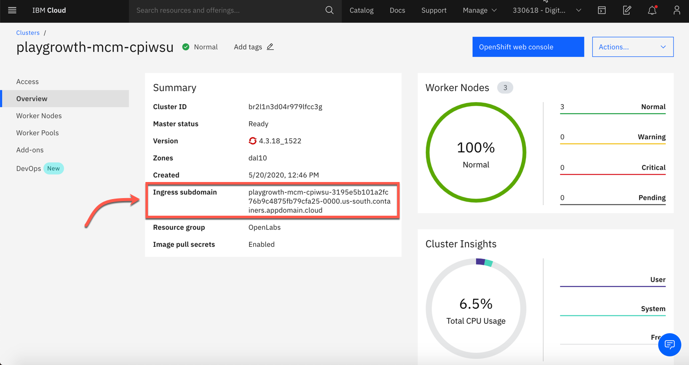
6.Back to the Terminal window, replace <your_ingress_subdomain>. Save and close the deployable.yaml.
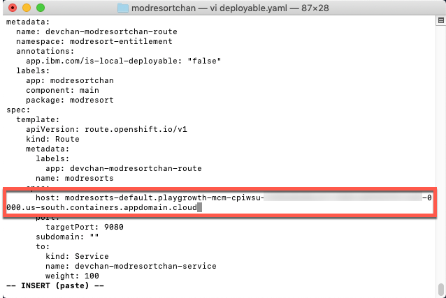
Next section, you learn how to create a subscription.
Create a Subscription
The subscription to a channel package contains
- Application Definition
- Placement Rules Definition
- Subscription Definition
Applications (Application.app.k8s.io) in IBM Multicloud Manager are used for grouping application components.
Placement rules (PlacementRule.app.ibm.com) define the target clusters where deployables can be deployed. You can use placement rules to help you facilitate the multi-cluster deployment of your deployables. Placement rules can be referenced by deployables and subscriptions.
Subscriptions (Subscription.app.ibm.com) are sets of definitions that identify deployables within channels by using annotations, labels, and versions.
The subscription controller can monitor the channel for new or updated deployables, such as an updated Helm release or a new Kubernetes deployable object. Then, the controller can download the Kubernetes deployable object or Helm release directly from the source location (Helm repository, object store, or namespace) to the target managed clusters.
1.Back to the terminal window, let’s explore the YAML files on modresortapp folder.
cd ../modresortapp
2.Now, using your editor again, open the application.yaml. Below is the content of the file:
apiVersion: app.k8s.io/v1beta1
kind: Application
metadata:
name: modresort101-modresortapp
namespace: modresort-project
labels:
app: modresortapp
spec:
selector:
matchExpressions:
- key: release
operator: In
values:
- modresort101
componentKinds:
- group: app.ibm.com
kind: Subscription
Here we have the definition of our modresort application. Refer to the online documentation for details on configuring the Application resource.
3.Close the application.yaml file.
4.Use your editor again, to explore the placementrules.yaml file. Below is the file’s content:
apiVersion: app.ibm.com/v1alpha1
kind: PlacementRule
metadata:
name: modresortapp101-modresortapp
namespace: modresort-project
labels:
app: modresortapp
release: modresort101
spec:
clusterReplicas: 1
clusterLabels:
matchLabels:
environment: Dev
Placement Rules defines where and how Helm charts and deployables are deployed. Use placement rules to help you facilitate multi-cluster deployments of your deployables. Refer to the online documentation for details on configuring the Placement Rules resource.
In your case, the placementrules.yaml is defining to deploy the modresortapp in Dev environment only.
5.Close the placementrules.yaml file.
6.Now, let’s explore the subscription.yaml file.
apiVersion: app.ibm.com/v1alpha1
kind: Subscription
metadata:
name: modresort101-modresortapp
namespace: modresort-project
labels:
app: modresortapp
release: modresort101
spec:
channel: modresort-entitlement/modresort-devchan
name: ""
packageFilter:
version: ">=1.x"
labelSelector:
matchLabels:
package: modresort
component: main
placement:
placementRef:
name: modresortapp101-modresortapp
kind: PlacementRule
group: app.ibm.com
overrides:
- clusterName: "/"
clusterOverrides:
- path: "metadata.namespace"
value: default
This contains the details of relating the placement rule definition with the application specification. Refer to the online documentation for details on configuring the Subscription resource.
7.Close the subscription.yaml file. All your files are ready to deploy the application.
This completes enabling an existing application with policies so that they can be deployed to any Kubernetes managed cluster. Next section, you deploy the application using the channel and subscription created here.
Deploy the Application
In this section, you will deploy the application components to their respective Kubernetes namespaces, using the yaml files that you created in the previous task.
1.Back to the terminal window, set the context to use your Hub Cluster.
kubectl config use-context roks-hub-cluster
2.You should be already logged in your Hub Cluster. Run the command bellow to confirm it:
cloudctl api
Only if you are not logged in, you can run the command below to log in to Hub Cluster:
cloudctl login -a <CP4MCM_console_hostname> -n default
3.Execute the command bellow to create two new Openshift projects.
oc new-project modresort-project
oc new-project modresort-entitlement
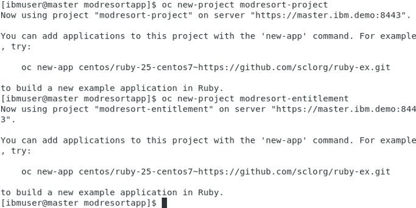
4.Now, let’s deploy the modresortchan. Execute the commands below:
cd ..
oc apply -f modresortchan
The output of the above command will be similar to the illustration below. The output shows that Channel and Deployables are deployed.
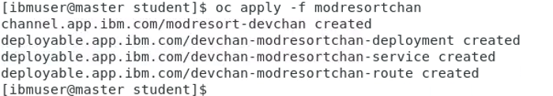
5.The subscription is deployed to a different namespace than the channel. Never deploy the subscription to the same namespace as the channel. Hence, deploy the subscription to the other namespace, modresort-project.
oc project modresort-project
oc apply -f modresortapp
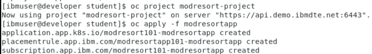
Next section of the lab will walk you through validating the application deployment.
Validate the Application
The Application view in Cloud Pak for Multicloud Management console provides graphical view into the applications, channels and subscriptions deployed in the clusters. Let’s validate if the modresort application is deployed correctly.
1.Back to the Firefox browser, you should be in your Cloud Pak for Multicloud Management Web Console. If you are not, check here how to open your console page.
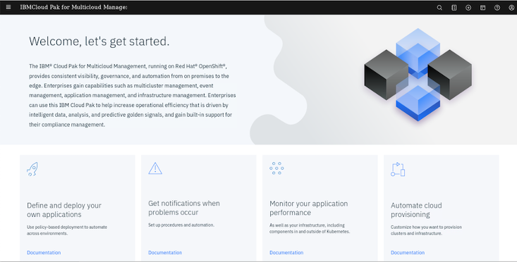
2.On the top left of the page, open the Menu (1) and select Manage Applications (2).
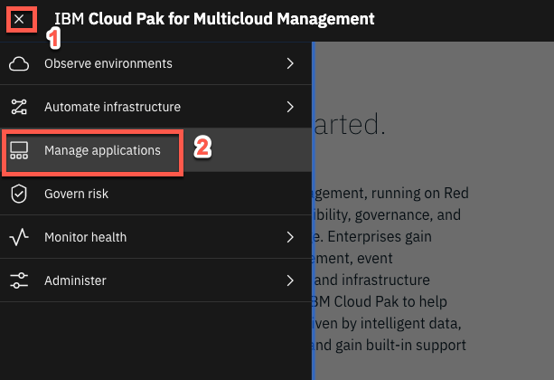
3.Click on the modresort101-modresortapp application link to get to the application Overview page.
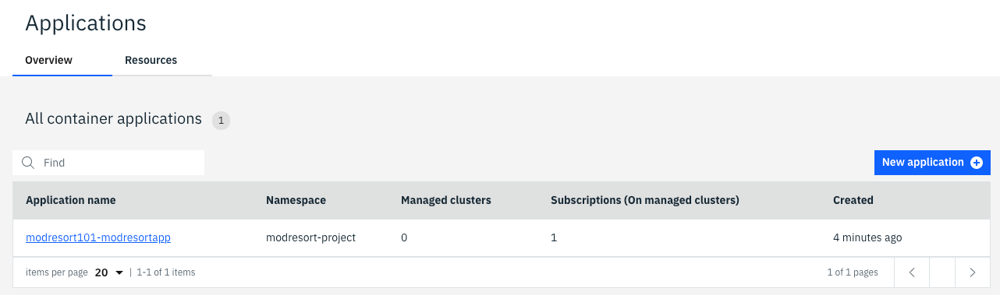
4.Scroll down to view the application diagram.
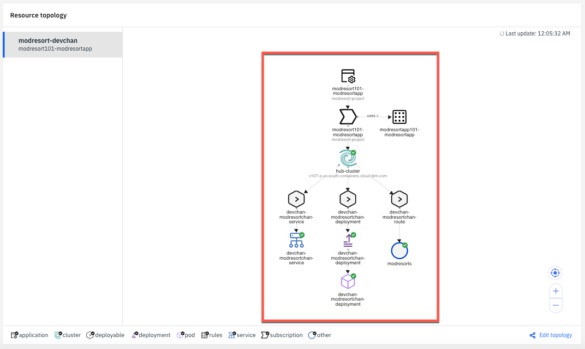
Note: It may take a couple of minutes for the application to deploy to the cluster.
When the application is successfully deployed via the subscription, the pod in the application topology view will have a green icon as illustrated below.

Note (Only if you have issues): After a couple of minutes, if your pod has a yellow icon next to the pod, indicating it is in an unknown state, you will need to troubleshoot your yaml files for correctness and redeploy the resources. Verify that your subscriptions are propagated correctly by running the command.
oc get subscription.app.ibm.com --all-namespaces
The subscription from the mcm hub should be in the Propagated state.
5.Back to the terminal window, let’s check the pods are in running state.
oc get pods -n default
You should see the devchan-modresort-deployment pod running in the default namespace
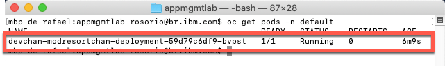
6.Use the command line to get the devchan-modresortchan-service NodePort.
oc get services -n default
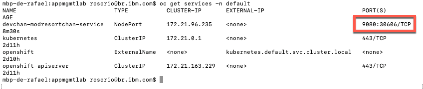
Take note of the devchan-modresortchan-service nodePort (on the picture above is 30606), you will use it to access your application.
7.Back to the browser, open a new tab and navigate to:
http://<your_ingress_subdomain>:<NodePort>/resorts
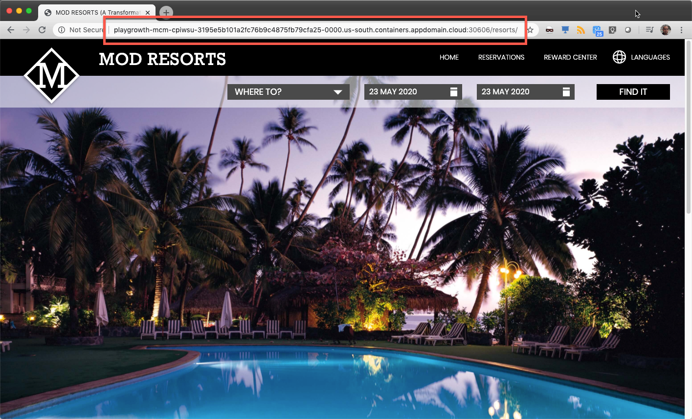
Congratulations! You have successfully deployed the modresorts application to the local OpenShift Cluster.
Move the Application
Applications deployed using the Subscription model are deployed to clusters based on PlacementRules. The placement rules for deployables can be defined as a stand-alone resource and referenced by the deployable. The placement rules use cluster labels to determine where to place the applications.
In the following steps, you will move the application from the Dev cluster to the QA cluster by changing the placement policy. You also learn how to use cluster replicas.
1.Currently, the application deployed as running on Dev cluster because of the placement values specified in application, as you verified earlier.
You can modify the placement policies from application view by selecting the placement policy and modifying the corresponding values in the yaml file. Let’s do it!
Back to the Multicloud Management page, on the Resource topology chart, click on the modresortapp101 placement policy icon.
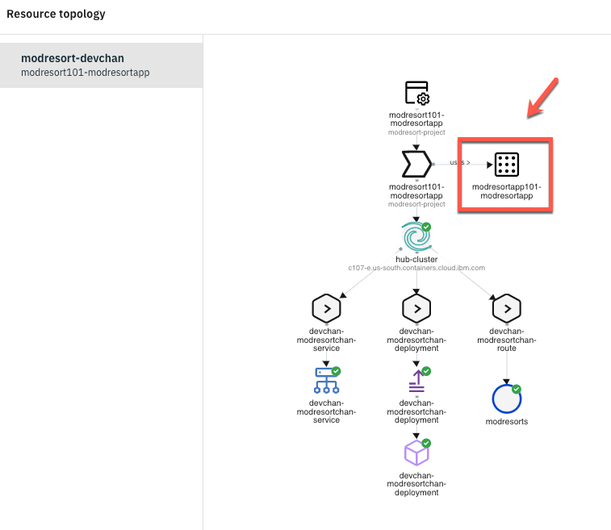
2.On the Editor, modify the environment setting from Dev to QA.
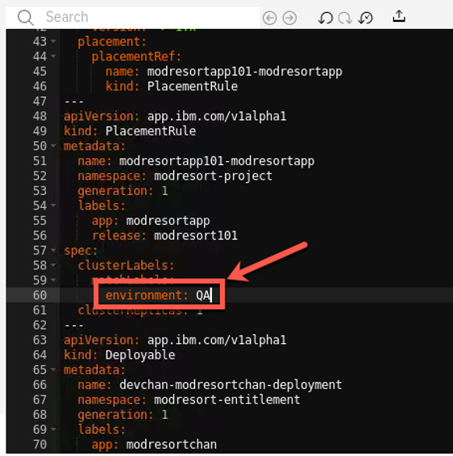
3.Apply changes by clicking on update icon as shown below.
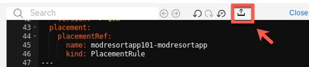
4.Within a few minutes, the cluster value changes from hub-cluster to managed-roks, and the application is now running on managed cluster instead of hub cluster.
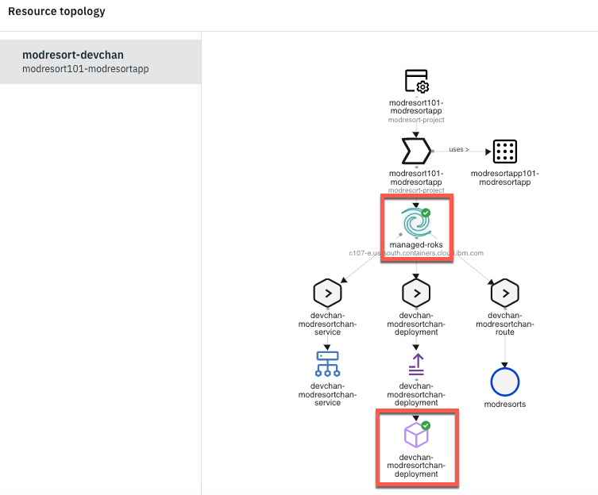
5.To validate that the application moved from the hub-cluster to the managed-roks, back to the Terminal window and change your kubectl context to use your managed-roks cluster:
kubectl config use-context roks-managed-cluster
6.Check that devchan-modresortchan-deployment pod is running, executing the command below:
oc get pods -n default
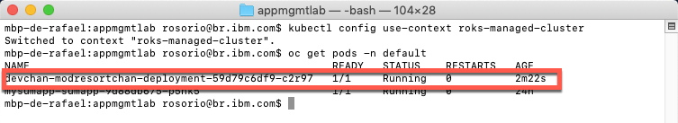
7.Execute the command below to get the service port.
oc get svc
Make a note of the nodePort value to access the UI (in the picture below the NodePort is 30970).
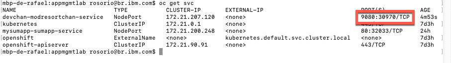
8.Now, you need to see the ingress subdomain of your Managed Node (ROKS of Cloud Pak for Apps). Let’s do the same step that you did to get the ingress subdomain of Cloud Pak for Management ROKS. Open the e-mail that you received when you requested the Cloud Pak for Apps environment, and open the Cluster URL Link.
In this Cluster detail page, you should see the Ingress Domain (confirm on the top, that you are on the Cloud Pak for Apps cluster).
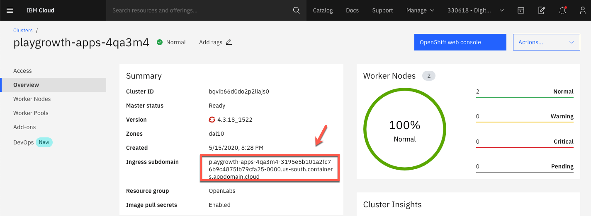
9.Open another browser tab and access the application running on managed-roks cluster using the following link:
http://<your_managed-roks_ingress_subdomain>:<NodePort>/resorts
Great, you moved the application from one cluster to the other.
10.What if you want to run the application on both the clusters? This is possible by changing clusterReplicas and matchingLabel. Let’s do it!
Back to the Multicluster Management page, on the Editor, change clusterReplicas to 2.
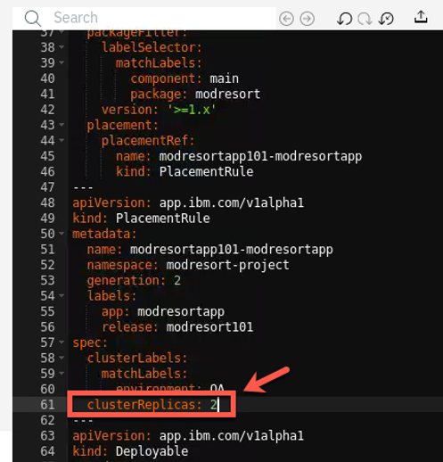
11.On the spec matchLabels setting, remove the environment label, and add vendor label with value Openshift.
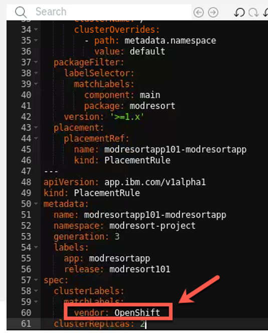
The label, vendor, exists on both the clusters and the value matches OpenShift.
12.Apply the changes by clicking update icon.

13.Within a few minutes, the resource overview refreshes, indicating that the application is running on both clusters. You can validate by checking the status of pods on both the clusters
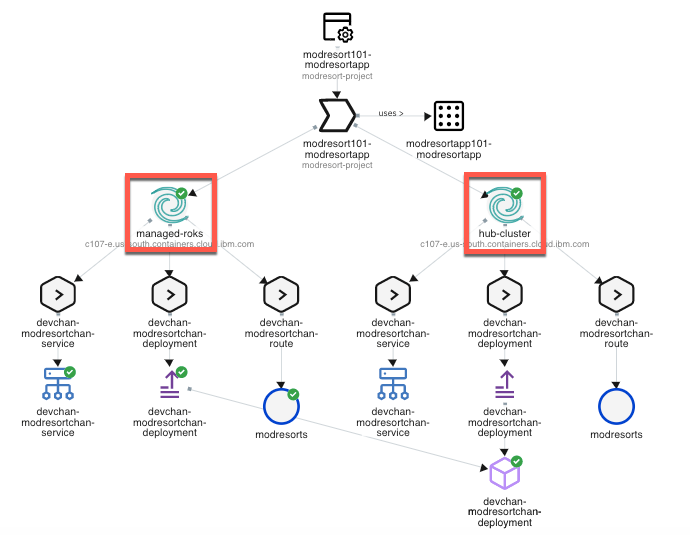
Great, now you have your application on both clusters. Next section, you explore Grafana dashboard to visualize the application health across clusters.
Visualize Application Health
Cloud Pak for Multicloud Management provides Grafana dashboard via Federated Prometheus to visualize the application health across clusters.
1.Click Grafana on the upper-right corner to display the dashboard.
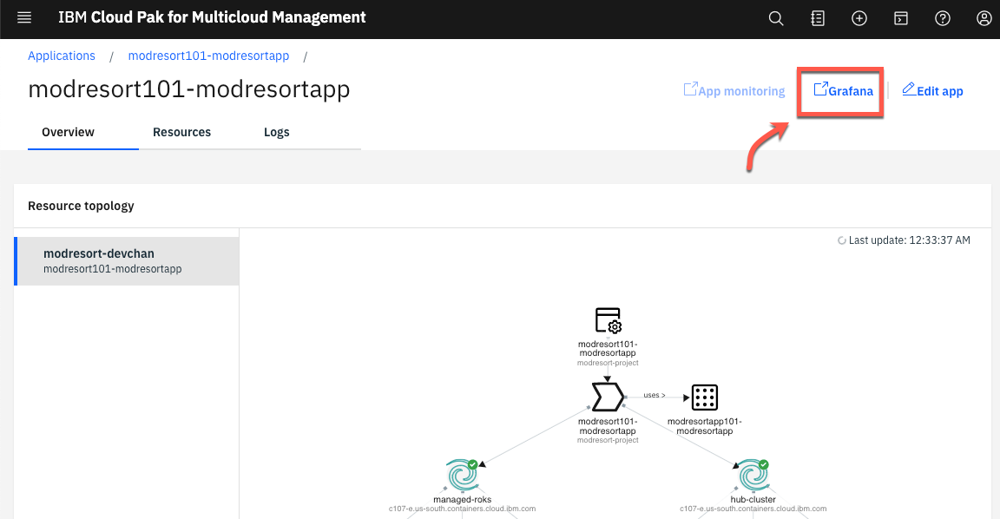
2.From the Federated Prometheus Dashboard, you can see details on your application health and usage such as memory, CPU, network, etc. The data is refreshed every 10 seconds.
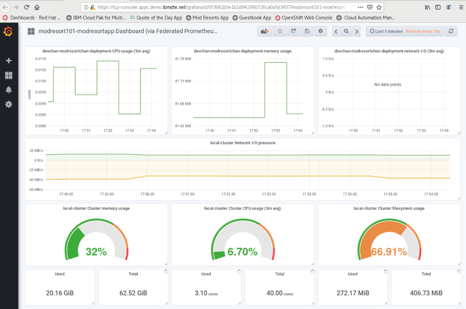
3.Click on the Alert button.
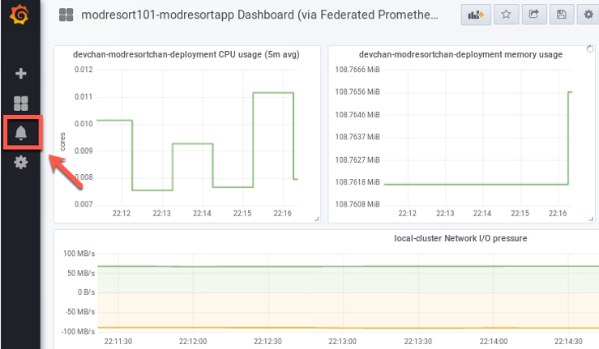
4.On the Alert page, you are able to create Alert based on Alert Rules and define Notification channels.
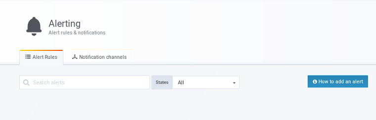
Congratulations! You have successfully completed the lab “Application Management with IBM Cloud Pak for Multicloud Management”.
Summary
You completed the Cloud Pak for Multicloud Management tutorial: Multi-cluster Management. Throughout the tutorial, you explored the key takeaways:
Understand Cloud Pak for Multicloud ManagementDefine an application with Channels and SubscriptionsDeploy the application chart from the catalogModify Placement Policies to move application resources across clustersCheck the application health by using Federated Prometheus Dashboard
If you would like to learn more about Cloud Pak for Multicloud Management, please refer to:
- Cloud Pak for Multicloud Management home page
- Cloud Pak for Multicloud Management Demos